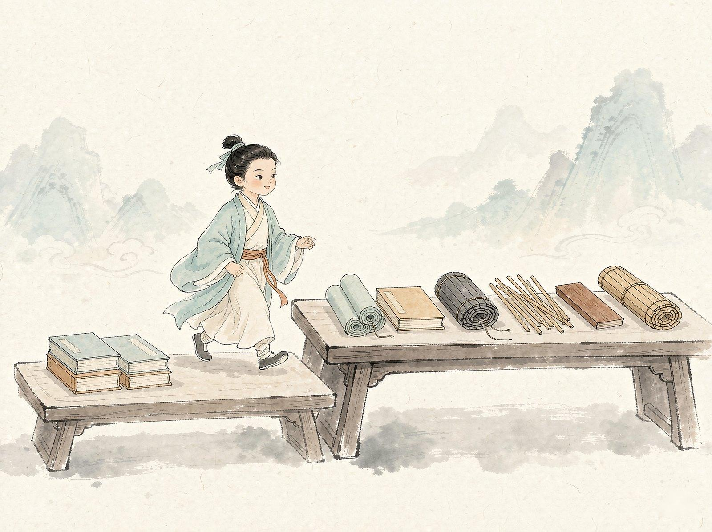

孝经通，四书熟。如六经，始可读
读懂《孝经》，融会贯通四书的道理。
孝，是我们与生俱来的仁爱萌芽，不是死板的规矩。
四书讲的道德、修身、爱人，源头都从这份对至亲的敬爱生发出来。
熟读不是死记，是心里明白，在日常言行里实实在在做到。

把《孝经》和四书的道理融会成熟之后，才可以去研读六经。
六经记载着上古的情志、礼法、天人、史事，内容广博繁杂。
先在心里立好仁义中和的标尺，再读古书，才不容易迷失在文字典故里面。
博览不是越多越好，先要稳住自己的心法根本。

落到心上理解
承接上一课存疑：外缘难化之时，齐家的边界如何安放。
孝，本是一体不忍之心，不是无底线消耗自己。孝里面有敬、有分寸，和中庸“发而中节”完全相通。
四书讲的诚意、正心、仁义、中和，都要落到这一念亲亲之爱上来检验。
书读得再通透，若是这一念仁爱淡漠，便是纸上空理；一味迁就顺从，失却本心之正，便是愚孝。
通晓其义，行而不执条文相，即是无住。
另有一问：出世辞亲的修行，如何和孝为仁本圆融。
次第本身，就是护持本心的方案。
六经里面有礼制、史迹、风情、卜筮、兴亡，万象纷纭。若无四书的中和仁义做标尺，读的时候极易随文流转，或偏爱古制、或厌弃旧法，落入边见。
先熟孝经、四书，心里有主，再读六经：知古人立制，本为养人仁善中和之心；制度可以变迁，仁心之本不变。
博览而不逐相，阅尽万象而回归本心，即是无住。
将孝等同于一味顺从、压抑自我，行愚孝；读书贪多求博，未明纲领便直接研读六经，散乱无主
孝主敬爱，亦有是非分寸，和中道义一体；先立本心仁义中和之准则，再博览六经，以简驭繁
- 孝是仁爱的本源，是儒门人伦心性的起点。
- 《孝经》打通天性与人伦，四书铺展由孝延伸而出的整套修学路径。
- “熟”重在融会于心、事上践行，不单单是文字记诵。
- 一切修齐治平的德行，皆从这一念亲亲敬长之心生发。
- 读书次第：孝经、四书打底，而后可读六经。
- 四书提供义理标尺，六经是上古文明的总汇，广博而多元。
- 博览的前提，是先建立稳定的心法主见，不被文辞史料带偏。
- 读经是借古人言教印证自心，而非向外追逐知识见闻。
一、勘俗见。区分“孝”和愚孝，孝的内核是敬爱，不是没有原则的盲从。区分“博学”和“杂学”，博学要有主线纲领，不然知识再多，只是散乱信息。
二、现代对照。如同种子，孝是种子，四书是种子生长成大树的完整生长蓝图。好比先校准罗盘（孝经、四书），再游历山川典籍（六经），才不容易迷路。
三、承接常变主线。敬爱之本不变（常）；孝的表达方式、侍奉的形式，随时代、境遇调整（可变之相）。仁义中和的本心纲领不变（常）；六经所载的古礼、古制，属于特定时代的方案，可参考而不必照搬（可变之相）。
四、承接教与学二分。师长讲明孝的本义，分辨合理奉养与无底线顺从，属于施教一侧；学人在和家人相处中，存敬守仁，是自主修习。师长讲明读书先后次第，区分纲领与外缘史料，属于施教一侧；学人读典之时，时时以本心仁义对照自省，是自主修习。
承接选择力练习：明孝为仁本，贯通四书义理，守敬爱而合分寸，不困于旧形式教条。
孝经通，四书熟。如六经，始可读
一字义与句读
孝：天性亲亲之敬，仁之根；经：常道；通：义理洞达，知行相应；熟：融会贯通，随事能照，不滞文辞。
上句释义：通达《孝经》所传天性人伦之本，融会四书的仁义、中和、修齐治平之学，令根与枝干一体，知与行不二。
六经：《诗》《书》《礼》《易》《乐》《春秋》；始可读：不是不能翻看，是适宜深入研读、取其教化义理。
下句释义：待《孝经》人伦之本通达、四书性命修齐之义熟透，建立稳定的义理权衡之后，才适合深入研读六经，借上古典册印证本心、开阔教化格局。
二命题考辨
（1）全书结构的转折
前面一路，从小学训诂，升阶四书，走完论语、孟子、中庸、大学；此句回溯源头，点明整套四书的根基是《孝经》。
仁不是凭空构想出来的高尚理念，它的第一现场，就是亲子之间天然的感通。由孝扩而充之，便是孟子所说的四端，向外推扩，就是修齐治平。
（2）对照当下现代语境
现代家庭关系里，常常走向两端：一端是长辈权威压制晚辈，以孝为名控制；另一端是疏离淡漠，视亲情为负担。
《孝经》与四书合参，给出中道：孝的核心是敬，是双向的体谅与尊重，不是单向的支配或者单向的牺牲。仁爱有源头，同时仁爱有边界，与中庸不偏、大学诚意一脉相承。
现代人的信息困境，就是“先杂博，无纲领”。海量典籍、各家学说扑面而来，没有一套稳定的心性框架，今天认同这一家，明天倾倒那一说，随观点摇摆。
这套次第给的解法：先收敛，立根本，再放开博览。先把自己的良知、中和、本末判断稳住，再去接纳多元的文明记载。
（3）般若范式互参
孝、四书，都是接引的假名经教。
六经典籍，是教化假名载体。
联动三才五蕴太极空杯模型：自性虚空一体，便是孝所源自的同体本心；四书种种义理条目，是用来显发这一体之心的路径。路径再好，路径不是虚空本身；读经通达，是回归同体之仁，而不是困在文字之中。明德自性是虚空；四书是校准虚空的标尺；六经是投射在虚空之上万千历史、礼制、情志影像。影像千姿百态，虚空本身不动。我们阅六经万象，是借影像体会虚空之德，而不是抓取影像当成真实本体。
呼应“本乎数”：孝为一源，开四书四纲，一本散万殊。一纲（孝、四书）御六典，约以统博。
延伸义理：
《金刚经》：同体大悲，可以和孝的一体之心互参；孝是世间同体之始，大悲是法界同体。说法如筏喻，六经四书皆是筏；筏有大小，终归渡向自性。
《道德经》：六亲不和，有孝慈，是勘破表象孝慈，回归浑朴本源；儒门立足世间，以孝慈立仁本。博者不智，和这里“先立约、后博观”可以互参；老子偏向归约，儒门约而后博。
《坛经》：心佛众生三无差别，也是同体；儒门从最近的亲情入手，循序渐进。不立文字，不是废文字，是不执文字；此句教人有序读典，正是读而不执的前行防护。
（4）蒙学治学阶梯总节点
三字经这条脉络非常清晰：小学识字训诂 → 孝经、四书立心法定盘 → 六经博观。
四书是浓缩的判准：何为善、何为中、何为仁、何为本末；六经是历史场景下的实践样本。
同一个仁义大本，在不同时代、不同人群、不同处境，演化出诗的情志、书的政令、礼的节文、易的天人、春秋的褒贬。没有四书的标尺，读者很容易把古制当成永恒标准，或者全盘否定古教。
三跨典互参（老庄、般若对照）
· 《道德经》：孝慈为德之显，勘其迹而存其本。知其要者，一言而终；不知其要，流散无穷，正是先立纲领再博览。
· 《庄子》：仁义孝悌为人间之迹，贵在不忘其本。
· 串联前文：蒙学次第，识字、训诂、四书，至此返归仁孝本源，收束四书阶段，开启新的典籍序列。治学链条，由蒙学识字，入孝经四书，至此开启上古六经的博观阶段。
· 《庄子》六经为先王之陈迹，迹不是所以迹，与本句要义相合：读经贵见本心，不贵陈迹。
四和前面课程的张力
次第链条：……→ 自修齐，至平治 → 孝经通，四书熟 → 如六经，始可读
呼应“人不学，不知义”：知仁义之本在孝；知读书治学先后本末之义；
呼应“玉不琢，不成器”：在亲情日用打磨这一念仁敬；以六经万象，继续打磨本心；
呼应“教之道，贵以专”：专守仁孝之本，贯通四书全部义理。专守仁义中和之纲领，博览而不散乱。
五1. 孝的根基是天性，那天性会不会被后天习气遮蔽？如何护持而不使其枯萎？
2. 孝推扩为仁，这一步扩充，中间容易夹杂私情偏爱，如何勘破？
3. 出世修行，辞亲离俗，和“孝为仁本”如何圆融？
4. 《乐经》失传，我们今日读六经，如何领会乐教的内核，而不只是停留于文字？
5. 六经之中，《春秋》褒贬、《易》的占观，如何把握，不滑入权谋、术数？
6. 本心纲领已经建立，博览之时，如何避免见闻增多而生出傲慢、知见之障？